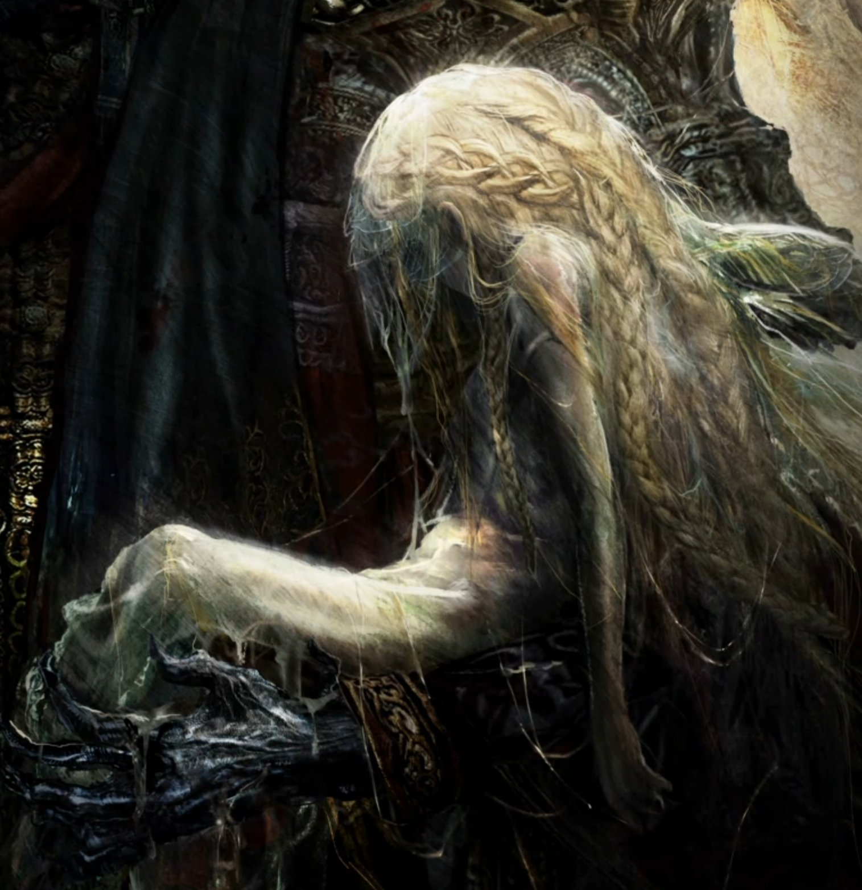

Marika and Radagon's union in Elden Ring has only produced two children: the twins Miquella and Malenia. Both of these are unique among all Elden Ring demigods. Malenia is born infected with Scarlet Rot, whilst Miquella is frozen in the form of a young child. Despite this, both are Empyreans, designated as potential future gods. Miquella's visions of his own order center around the Haligtree, a structure home to all those cast out by the Golden Order. (https://www.cbr.com/every-demigod-elden-ring-explained/)
Quotes on Miquella
"My brother will keep his promise. He possesses the wisdom, the allure, of a god - he is the most fearsome Empyrean of all"
"Finally, I have found it..... St. Trina's, no, Lord Miquella's cadaver... Such that I may aid you, O Lord... So please, I hope you welcome your humble servant Rhico... Into your dream, the world of your heart...... Indeed, I beg you grant my wish, that when you transcend from empyrean to god, allow me a place by your side....."